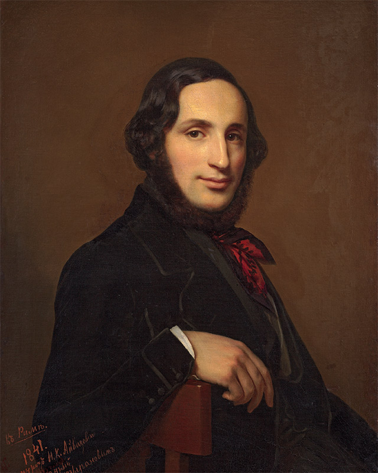
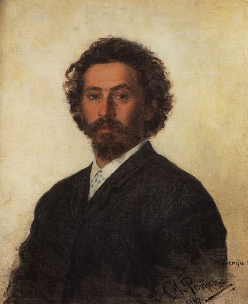

Ива́н Константи́нович Айвазо́вский (арм. Հովհաննես Այվազյան, Ованнес Айвазян; 17 [29] июля 1817 года, Феодосия, Таврическая губерния, Российская империя — 19 апреля [2 мая] 1900 года, там же) — представитель русской живописи, маринист армянского происхождения, коллекционер, меценат.

Илья́ Ефи́мович Ре́пин — русский живописец, педагог, профессор, действительный член Императорской Академии художеств. Уже с самого начала своего творческого пути, с 1870-х годов, Репин стал одной из ключевых фигур русского реализма.

Ива́н Серге́евич Турге́нев — русский писатель-реалист, поэт, публицист, драматург, прозаик и переводчик. Один из классиков русской литературы, внёсших наиболее значительный вклад в её развитие во второй половине XIX века. Высокую оценку творчество Тургенева получило в России и на Западе.